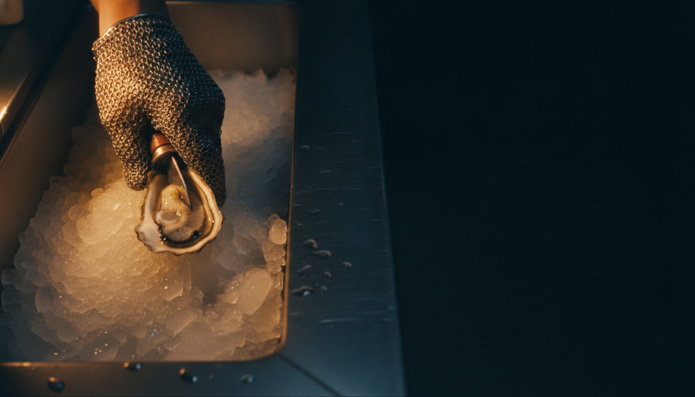
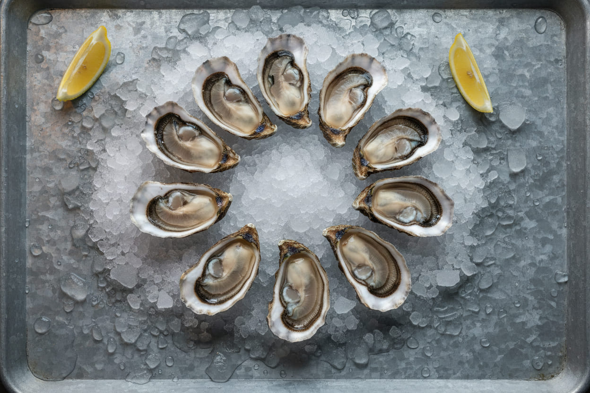
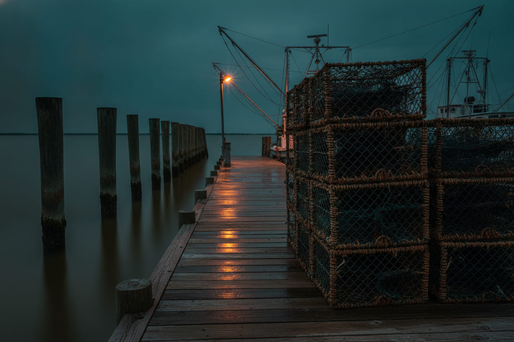
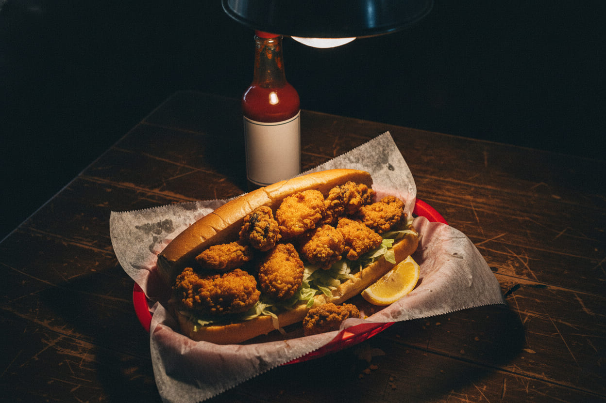
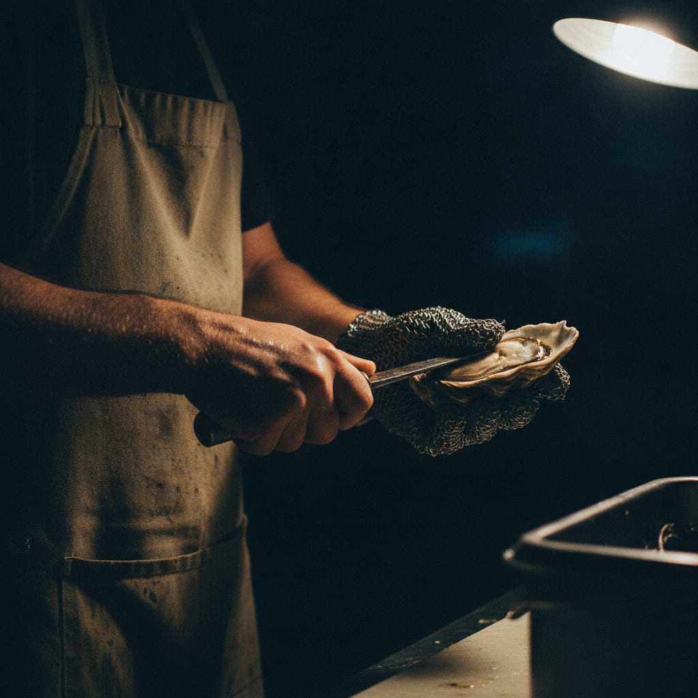
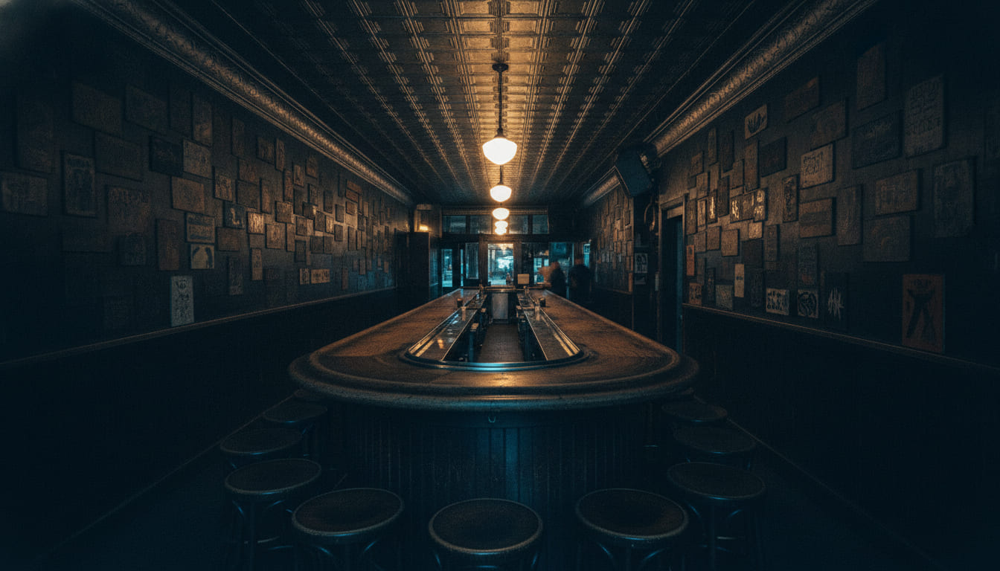

Harvest Tag
- Water
- Portersville Bay
- Salt
- 22 ppt
- Landed
- Tue 6:40 am
- Count
- 41 dz

Harvest Tag
Gulf oysters off Portersville Bay, shucked to order over crushed ice. Doors at four, Tuesday through Saturday. Every dozen comes with its water.
01 — Tonight's board
You will be told which bay, which morning, and how many are left. Not because it is charming — because it is the only thing that decides how one tastes.

Raw · on the half shell
$15
Six on ice, lemon, saltines, horseradish you grate yourself. Cocktail sauce if you insist.
Raw · on the half shell
$26
Twelve from one sack, one bay, one morning. Curtis will tell you which before he opens the first.
Off the truck · you shuck them
$78
Roughly a hundred count, sold sealed with the tag still wired on. Bring a towel and a flat knife. We will not open them for you.

02 — Where it comes from
Shell Belt Road is the working road out to the docks at Bayou La Batre. This house is named for the road our product comes in on, and for nothing else. There is no ship's wheel on the wall.
Meroir — the water's fingerprint. Portersville runs about twenty-two parts salt; you taste it on the finish, after the sweet.
Cages suspended in the water column and tumbled by the tide. It gives a deep cup and a clean shell, and it keeps them off the mud.
Bayou La Batre to Dauphin Street. We drive them ourselves and they are in the box before noon, still cold from the boat.
Salinity at the lease this week. Under fifteen and they go flat and watery; over thirty and they bite back at you.
Harvest tag 4412
Keep wet · keep cold
03 — The tag
Every sack that comes off a boat in this state wears one of these, wired to the neck: what water it came out of, what day it was pulled, how many are inside. Nothing else you eat travels labeled by body of water and date.
We keep the tags in a shoebox behind the register. If you want to see the one your dozen came out of, ask — it is right there, damp and creased, with somebody's handwriting on it.
That is the entire promise of this place. We can tell you where it has been since six that morning.

04 — The fried side
The fryer opens with the doors at four and shuts at nine, whatever the bar is doing after that. Same oyster, cornmeal instead of the half shell, and it is what most people order the second time they come in.
Hot · from the fryer
$17
Dressed, on French bread, with the lettuce shredded thin so it does not push the oysters out the back.
Hot · a cup or a bowl
$12
Dark roux, okra, and whatever came in on the boat that morning. Some weeks that is shrimp. Some weeks it is not.
Hot · over coals
$18
Garlic butter and hard cheese, run over live coals until the edges curl. Bread comes with it to get the butter.
Always on the bar
No charge
Take them. That is what they are there for.

05 — The belt
Curtis Ladnier works the near end. He opens somewhere around six hundred on a Friday, and in nineteen years the mail glove has never let a blade through — which he will tell you is luck and skill in about equal parts.
Ask him what is good tonight. He will tell you what is not, which is the more useful half of the answer.
If it doesn't smell like the tide, I'm not handing it to you.
Curtis Ladnier, shucker

06 — The room
A narrow storefront on Dauphin Street with a pressed-tin ceiling, one long bar bent into a horseshoe, and about ninety years of small signs on the walls that nobody is allowed to take down.
07 — Hours and address
Some nights that is nine. On a good Saturday in November it is a quarter past eleven and we are still hosing down the trough at midnight.
Tuesday to Saturday
Doors at 4:00 pm
Closed Sunday and Monday
411 Dauphin Street
Mobile, Alabama 36602
Between Joachim and Jackson
(251) 555-0148
Call for the count before you drive in for a bushel.
We are open all year. The bushels are best from September through April, and we will say so if they are not.